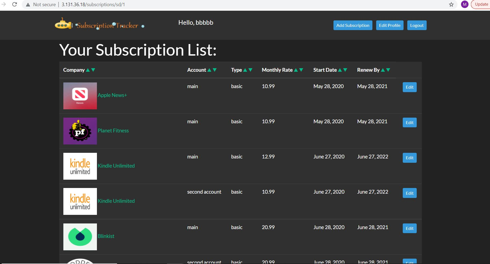
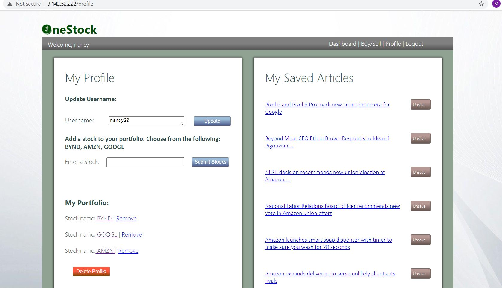

About Me
Two years ago I started learning to code on my own time and realized my love of Software Development. I’ve had the opportunity to work with machine learning from an administrative perspective as a Program Manager and I am looking to take that perspective into a career as a Software Engineer. My areas of focus include machine learning, AI software, data analysis, and web scraping, the last of which I implemented in a personal coding project. My unique background, which includes three years at a major tech company in a Program Manager role where I worked with machine learning software and interacted with developers on a regular basis, lends a one-of-a-kind perspective that I hope to carry into a software engineering role.
Subscription Tracker - August 2021
Subscription Tracking website built with Python in the Django framework.
OneStock - July 2021
A stock trading research feed application built with Python in the Django Framework using web scraping.
Office Invaders
- October 2020
Personal project written in C# and built in Unity from scratch using 27 scripts.